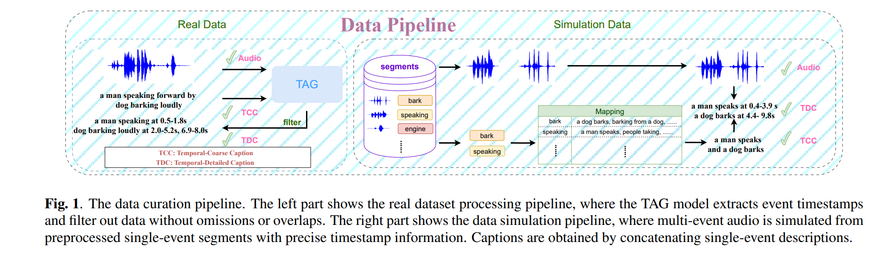

PicoAudio2
PICOAUDIO2: TEMPORAL CONTROLLABLE TEXT-TO-AUDIO GENERATION WITH NATURAL LANGUAGE DESCRIPTION
ihao Zheng
1,2
,
Zeyu Xie
1,2
,
Xuenan Xu
1,2
,
Mengyue Wu
1,2
1
X-LANCE Lab
2
MoE Key Lab of Artificial Intelligence, AI Institute, Shanghai Jiao Tong University
Paper
arXiv
Code
Text-to-Audio Generation Comparison
Data & Model
数据 Data

模型 Model
Text Prompt
PicoAudio2 (Ours)
AudioComposer
AudioLDM2
Tango2
Make-An-Audio 2
An engine rumbles loudly at 0.2-3.9s and an air horn honks at 4.7-5.5s, 6.5-6.8s.
A bell is ringing loudly and quickly at 0.0-3.2s.
An engine rumbles loudly at 0.2-3.9s and an air horn honks at 4.7-5.5s, 6.5-6.8s.
A quick loud explosion at 0.1-0.8s and music plays with pulsating sounds at 1.1-5.8s and a man talking at 6.8-9.6s.
Tap water is running at 1.0-7.6s and a tapping noise at 0.5-0.6s, 9.0-9.4s.